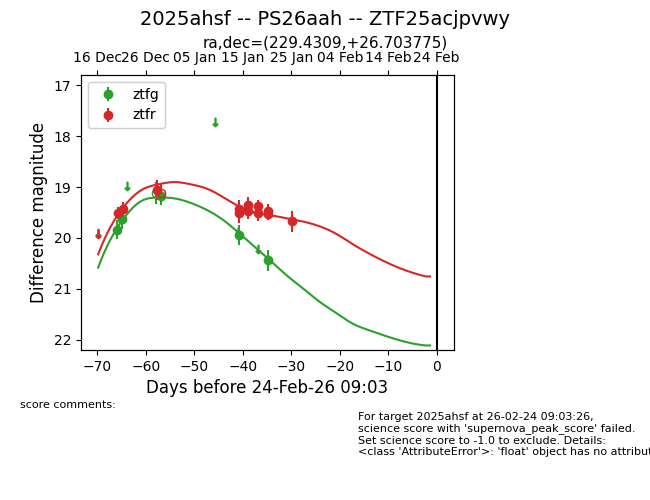
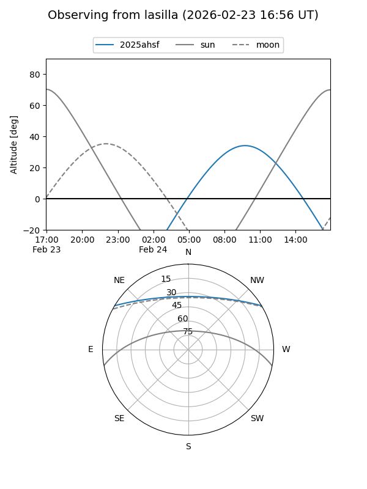
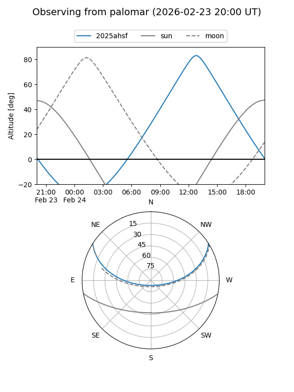
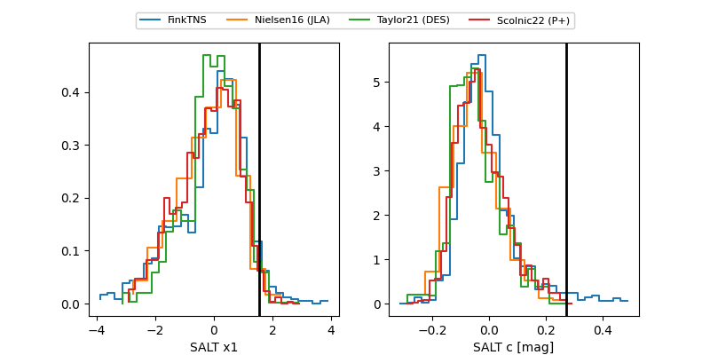

2025ahsf
Target 2025ahsf at 2025-12-28 13:46
Aliases and brokers:
FINK: fink-portal.org/ZTF25acjpvwy
Lasair: lasair-ztf.lsst.ac.uk/objects/ZTF25acjpvwy
ALeRCE: alerce.online/object/ZTF25acjpvwy
TNS: wis-tns.org/object/2025ahsf
YSE: ziggy.ucolick.org/yse/transient_detail/2025ahsf
alt names
ZTF25acjpvwy (ztf,fink_ztf)
2025ahsf (tns,yse)
Coordinates:
equatorial (ra, dec) = 229.4309,+26.70378
equatorial (HMS+DMS) = 15:17:43.41,+26:42:13.59
galactic (l, b) = (40.7192,+57.50479)
Flags:
Photometry:
last ztfg=19.63, ztfr=19.06
2 ztfg, 3 ztfr detections
Lightcurve

Visibility


Additional plots
